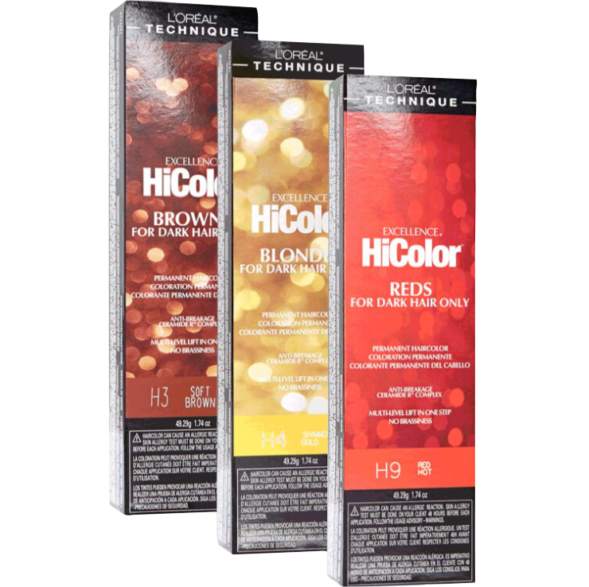
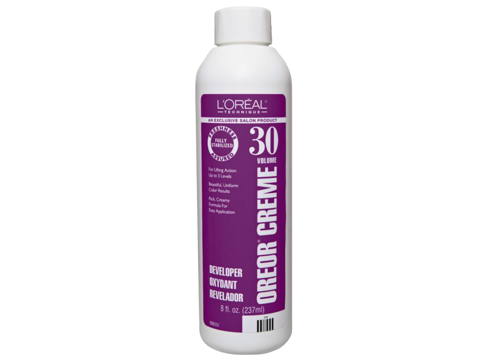

+

There are a few dyes on the market known as "lift and deposit" colors, which does exactly as the name suggests. Using 30 volume developer makes this process possible. Formulated for darker hair, these products will lift the cuticle of the hair and proceed to lift the color of the cortex approxiamtely 3 levels, then deposit the desired color. Think of it as combining the steps of bleaching and then dying your hair in one. Theoretically, you could mix 30 vol with a Permanent color for a similar result, but I personally have had the best luck with brands that are specifically lift & deposit.
Hair Color
home